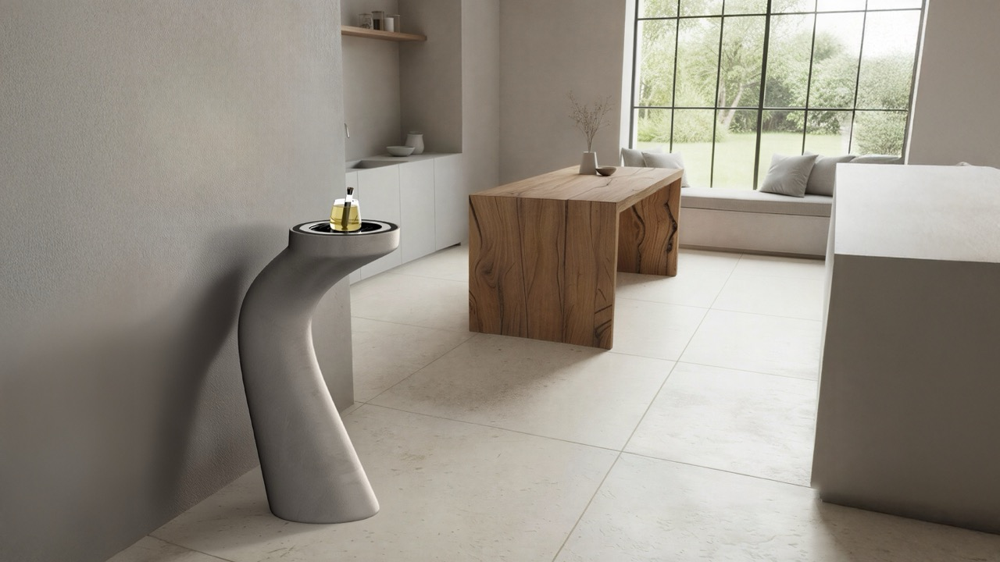
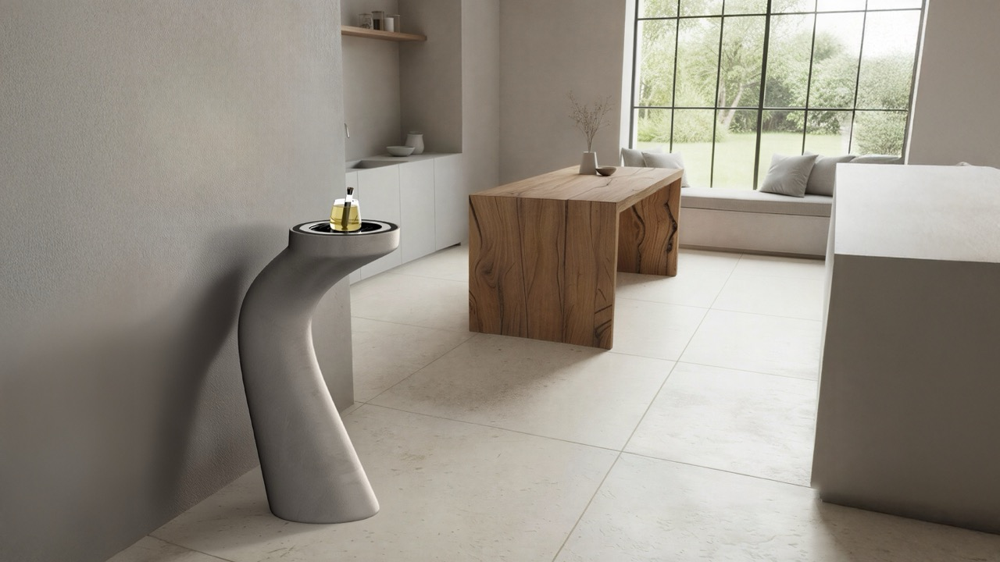

Obelisk
In so many of our lives, stillness is missing.
The weekday morning is a rushed process: throwing on clothes, a quick cup of coffee or tea and out to start one’s day.
Obelisk aims to bring back a careful moment of rest. It is an innovative use of robotics that brings together the ceremony of tea drinking with meditation.
“Tea is a path to the universe.” — Popchong Sunim

 
